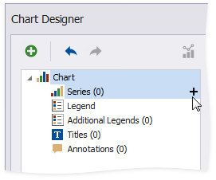
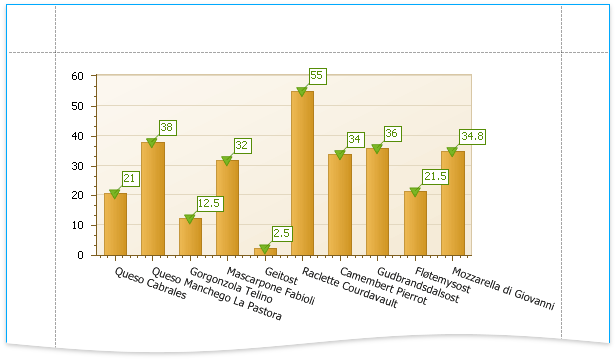

Add a Chart (Set Up Series Manually)
This document describes how to add a chart to a report, provide data for the chart series, and set up a chart's elements. In this example, series data has a single data source. You can also use different data sources for different series.

Add a Chart to a Report
Drop the Chart control from the Toolbox onto the Detail band.

After you drop the chart, the Chart Designer is automatically invoked if its Display the designer every time a new chart is added option is enabled. Close the designer at this step.
Open the Toolbar's Chart Tools contextual tab and click Add Data Source to bind the chart to data.

The invoked Data Source Wizard enables you to assign a data source to the chart. Bind the chart to a data source as described in the Bind to Data section.
Click the chart's smart tag and make sure that the Data Source and Data Member properties were specified correctly.

Note
The report's Data Source property should be set to None because you placed the Chart in the Detail band. When a report has its Data Source property specified, the Chart is repeated in the preview as many times as there are records in the report's data source.
Add Series to the Chart
Switch to the Chart Tools toolbar tab and click Run Designer.

Do the following in the invoked Chart Designer to add a new series to the chart control:
- Locate the Series element in the chart elements tree and click the plus button.
Select the type (for example, Bar) in the invoked series type list.

Perform the following steps to populate the created series with points:
- Select the series in the tree and switch to the Data tab to the right of the designer's window.
- Select an existing data source in the corresponding drop-down list.
Drag-and-drop the data fields onto the Argument and Value cells to define series points' coordinates.

The Properties tab displays the Argument Data Member and Value Data Members settings that are automatically assigned to the corresponding fields.
Click the Data Filters property's ellipsis button to filter series data. You can create and adjust the filter criteria in the invoked dialog.

Create another series with the same settings. For instance, select the Point view type for this series.
You can do the following to see how the chart looks when it is populated with data:
- save changes made in the Chart Designer;
- close the Chart Designer;
- switch to Print Preview.
- Return to the Report Designer and invoke the Chart Designer. The chart axes are now populated with actual data, and you can customize the chart.
Customize the Chart
Apply the following adjustments to improve the chart's appearance:
Remove the chart's legend (the chart series are bound to the same data).
- Select Legend in the chart elements tree.
- Disable the Visibility check box in the Options tab.
Select the Label node under this series and disable the Visibility check box to hide Series1's point labels.
- Customize the Series2 markers' appearance. Set the View.Point Marker Options.Kind property to InvertedTriangle and View.Point Marker Options.Size to 12 to replace the default circle with an upside down triangle.
- Customize the chart's appearance settings. For instance, select Nature Colors in the Palette's drop-down list.
View the Result
Switch to Print Preview to see the resulting report.
